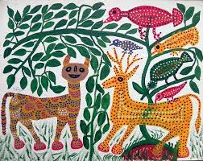

Patangarh, Dindori
Gond Painting
Gond painting is a traditional tribal art of central India, especially Madhya Pradesh, created by the Gond community. Its history comes from ancient wall and floor paintings made during festivals and rituals. Artists use dots, lines, and bright natural colors to show animals, trees, and daily life. Each painting often tells a story connected to nature and folklore. Its significance lies in preserving tribal culture and expressing a deep bond with nature.